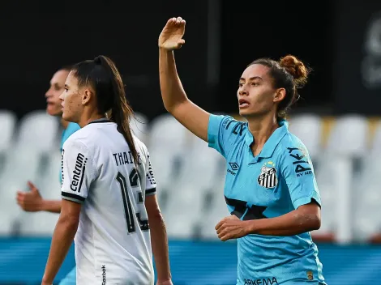

As Sereias da Vila empataram por 1 a 1 com o Botafogo na Vila Belmiro
O Santos é campeão do Brasileirão Feminino A2 2025. Neste sábado (30), as Sereias da Vila empataram por 1 a 1 com o Botafogo na Vila Belmiro. Com a vitória por 1 a 0 no jogo de ida, o Peixe garantiu o título com o placar agregado de 2 a 1.
Além destes dois duelos na decisão, as equipes já tinham se enfrentado na fase de grupos, pois ambas compuseram a chave A. Na ocasião, o Santos saiu com uma vitória por 3 a 1, no Jayme Cintra, em Jundiaí (SP).
|  |
O Santos começou melhor a partida e teve boas chances com Thaissinha. A camisa 10 comandava o ataque e criou boa oportunidade aos 19 minutos, mas Laryh cabeceou para fora após passe de Analuyza. Depois do susto das Sereias da Vila, o Botafogo cresceu no jogo e, aos 30, Carol foi derrubada dentro da área. Na primeira cobrança, a goleira santista pegou, mas a arbitragem mandou voltar pois a arqueira tinha se adiantado. Na segunda oportunidade, Carol balançou a rede a abriu o placar, reacendendo a esperança das Gloriosas. Com o gol, o placar agregado ficou em 1 a 1, o que levaria a partida às penalidades. O segundo tempo começou movimentando e com bastante equilíbrio. As duas equipes queriam mostrar serviço e tiveram boas oportunidades. Na metade da segunda etapa o Santos começou a pressionar mais as adversárias e foi aos 34 minutos que Carol Baiana balançou a rede e deixou tudo igual. O empate persistiu até o fim da partida, confirmando o título do Santos. |
Além de Santos e Botafogo, Fortaleza e Atlético-MG também garantiram o acesso para o Brasileirão Feminino A1 2026 pois chegaram à semifinal da Série A2.